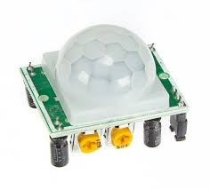

Projects/Visualization Gallary

December 2020 - Present
Counterpoint Checker
This is a counterpoint autograder developed by myself and four University of Michigan students. I implemented multiple algorithms to check student submissions against counterpoint rules. We are currently in discussion with University of Michigan SMTD faculty for use in Music Theory classes
Read more
March 2020 - July 2020
Raspberry Pi Motion Sensor
Used Python and the YOLOv3 object detection algorithm to write a script that detected and classified motion from four PIR sensors and two cameras. Information was then sent through a RabbitMQ to send emails and update a dedicated website
Read more